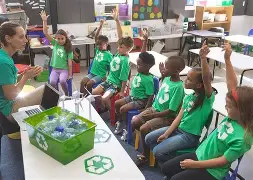

About GreenPath Community Foundation
Our History

GreenPath Community Foundation was founded by a small group of environmentally passionate residents who wanted to see real change in their neighbourhood. What began as a single tree-planting weekend has grown into an organisation that runs regular environmental programmes in partnership with local schools, municipalities, and businesses across Gauteng.
What We Stand For
GreenPath believes that environmental sustainability becomes stronger when local people are given the knowledge, resources, and opportunities to participate. We focus on practical projects that encourage communities to take ownership of their surroundings.
- Encouraging responsible use of natural resources.
- Creating opportunities for environmental education.
- Supporting cleaner, greener public spaces.
- Building partnerships that strengthen local environmental action.
Our Mission
To empower communities to protect and restore their local environment through education, action, and partnership.
Our Vision
A future where every community actively participates in environmental sustainability.
Our Team
-
Founder & Director
Oversees strategy, partnerships, and community outreach.
-
Volunteer Coordinator
Organises volunteer sign-ups and on-the-ground events.
-

Education Officer
Runs recycling and sustainability workshops in schools.
Working With Our Community
Environmental projects are more effective when communities participate from planning through to implementation. GreenPath welcomes collaboration with schools, community organisations, local businesses, volunteers, and other groups that want to support practical environmental initiatives.